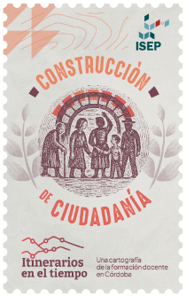
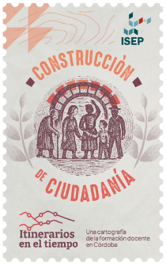

Institucionalización y expansión

El itinerario Institucionalización y expansión propone un recorrido que va desde fines del siglo XIX hasta mediados del siglo XX . Inicia un ciclo de génesis e institucionalización del sistema formador a nivel nacional haciendo foco en el escenario cordobés y la creación de las escuelas normales en el territorio provincial. El normalismo constituye una marca de la época: para ejercer el oficio docente, se requiere un título obtenido en la escuela normal. El recorrido continúa presentando los debates que atravesó la formación docente durante las primera décadas del siglo XX: las influencias del espiritualismo y el escolanovismo en Argentina imprimieron modernizaciones en un momento en que la formación docente atravesaba un ciclo en expansión. La experiencia de la Escuela Normal Superior en la Córdoba de los años ‘40 es una expresión paradigmática de los debates de la formación docente de la época.
Debates, actores y sentidos en el proceso de fundación de las escuelas normales en Córdoba.
Fragmento del documental
Las Escuelas Normales en la génesis del sistema formador en Córdoba
Las escuelas normales a la conquista del territorio.
Contexto político educativo nacional y debates sobre la formación docente en la época del Normalismo.
El clima de época en una escuela normal pardigmàtica: la historia de Jenny Howard en el Carbó.
Las marcas de la matriz fundacional normalista en la arquitectura del Carbó.
Las huellas del normalismo persisten en la arquitectura de la escuela Carbó, ubicada en el centro de Córdoba. Los protagonistas actuales recorren la institución día a día, muchas veces desconociendo las ideas que guiaron la construcción de los salones y pasillos, escaleras, patios y ventanas.


"Pero esa composición que la fotografía nos muestra puede señalar otras cosas. Más que la disputa entre dos modelos definidos con claridad que asumen valoraciones absolutas (normalismo laico y titulación, que acredita una formación adecuada y moderna, versus educación religiosa amateur, que aseguraba la transmisión de los valores tradicionales de la comunidad), el reflejo de la iglesia en la ventana del colegio puede indicar la presencia del afuera en el adentro; un resto religioso en el proyecto educativo y nacionalizador encarado por el Estado."
Producción de presencia por Diego García
Continuar leyendoFragmento del album
Fotografias de escuelas, el arte de la observación
El Escolanovismo: un Normalismo a la cordobesa.
Este recorrido llega a su fin, pero como todo lo vivo, este paisaje no se detiene.
Sigue creciendo, con cada gesto, cada palabra, cada encuentro.
Vos también sos parte de esta historia en marcha.
Después de haberlo recorrido...
¿qué rincones de este paisaje resuenan en tu historia personal?
Elegí la estampilla que mejor representa tu motivación docente y compartila.
Descargar estampillas Ver todos los materiales Volver al inicio 
